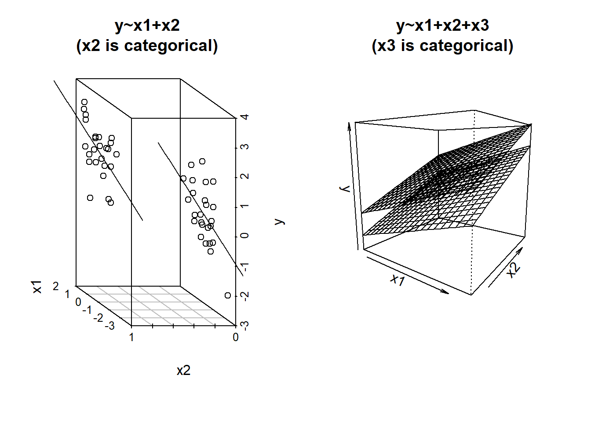
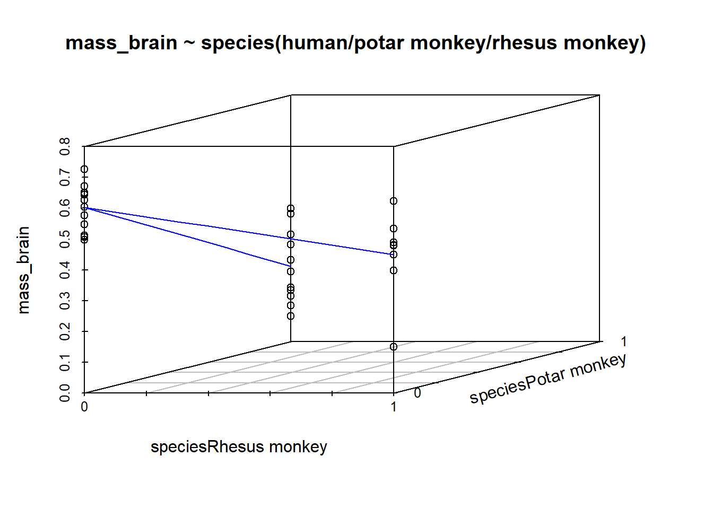

8B: Categorical Predictors
Binary Predictors
Since we’ve started working with linear regression, we’ve seen a few examples of categorical variables as predictors in linear models, and most (if not all) of these have been binary predictors - i.e. having just two categories (yes/no, dog/cat, phonics/word).
We talked initially 7A#binary-predictors) about how these get entered in the model as 0s and 1s.
Multiple Categories = Multiple Regression
We saw last week how to interpret simple regression models when there is a binary predictor (see 5B #binary-predictors). The addition of binary predictors in multiple regression models is pretty much the same - the coefficient will give us the estimated change in \(y\) when moving from one level to the other1, holding other predictors constant.
If you want a visual intuition to this, it is like a shift between two lines, or between two surfaces (depending on how many other predictors there are). It’s actually just another dimension to the model, but a dimension that is on a discrete scale - observations fall on 0 or 1, not on the continuum in between.
What about when we have a predictor with more than two categories? We might have lots of different conditions in our experiment, or we might have observations from lots of different distinct groups of people.
Consider an example where we are investigating the brain mass of different species of animals. We might have a datset which looks like this:
braindata <- read_csv("https://uoepsy.github.io/data/usmr_braindata.csv")
head(braindata)| species | mass_body | mass_brain |
|---|---|---|
| Human | 66 | 0.577 |
| Rhesus monkey | 18 | 0.398 |
| Potar monkey | 19 | 0.349 |
| Rhesus monkey | 18 | 0.48 |
| Potar monkey | 12 | 0.083 |
| Rhesus monkey | 18 | 0.534 |
| … | … | … |
When we consider a model in which brain mass is predicted by species, the species variable contains more than just two categories. In our example it has 3: “Potar monkey”, “Rhesus Monkey” and “Human”.
When we fit the model lm(mass_brain ~ species), the default way in which the species predictor is included in the model is by setting one category as the “reference level”, and comparing each level to that reference level. So if the reference level is “Human”, the coefficients we get out include the intercept (which is the estimated brain mass of humans); the estimated difference in brain mass when we move from humans to potar monkeys; and from humans to rhesus monkeys:
Call:
lm(formula = mass_brain ~ species, data = braindata)
...
Coefficients:
Estimate Std. Error t value Pr(>|t|)
(Intercept) 0.60271 0.02748 21.936 < 2e-16 ***
speciesPotar monkey -0.35735 0.04142 -8.627 7.38e-10 ***
speciesRhesus monkey -0.15261 0.04257 -3.585 0.0011 ** Under the hood, what really gets inputted into our model is a set of variables that are all 0s and 1s (much like it did for a binary predictor). In the table below, the left column shows the original species variable, and the remaining columns are the variables that R actually inputs to the model when we give it species as a predictor. We can see that one category (“Human”) is where all these are zeros.
| speciesPotar monkey | speciesRhesus monkey | |
|---|---|---|
| Human | 0 | 0 |
| Potar monkey | 1 | 0 |
| Rhesus monkey | 0 | 1 |
| … | … |
For a categorical variable with \(k\) levels, this is the same as adding \(k-1\) predictors into our model. Each of \(k-1\) predictors is actually just another dimension to the model:

R will default to using alphabetical ordering, hence the reference level being set as “Human”. We could override this by making it a factor with an ordering to it’s levels (see the use of factor() and levels() in 2A#categorical). Functions like fct_relevel() might be handy too.
Let’s bring back our example of primate brain mass. We can see the species variable has 3 levels indicating whether the observation is a Human, a Rhesus monkey, or a Potar monkey. The isMonkey variable (created below), is a binary variable indicating if it is a monkey (of any type) or not.
library(tidyverse)
braindata <- read_csv("https://uoepsy.github.io/data/usmr_braindata.csv")
braindata <- braindata %>% mutate(
isMonkey = ifelse(species != "Human", "YES", "NO")
)
head(braindata)# A tibble: 6 × 4
species mass_body mass_brain isMonkey
<chr> <dbl> <dbl> <chr>
1 Human 66 0.577 NO
2 Rhesus monkey 18 0.398 YES
3 Potar monkey 19 0.349 YES
4 Rhesus monkey 18 0.48 YES
5 Potar monkey 12 0.083 YES
6 Rhesus monkey 18 0.534 YES When we talked about categorical predictors initially, we mentioned that they get inputted into the model as a series of 0s and 1s. Our coefficients from linear models are, if we remember, interpreted as “the change in \(y\) associated with a 1 unit change in \(x\)”. By using 0s and 1s for different levels of a categorical variable we can make “a 1 unit change in \(x\)” represent moving from one level to another.
This means that we can get out an estimate of, for instance, the difference in brain mass from the group isMonkey == "NO" to the group isMonkey == "YES", as visualised in Figure 1
monkmod <- lm(mass_brain~isMonkey, data = braindata)
summary(monkmod)
Call:
lm(formula = mass_brain ~ isMonkey, data = braindata)
...
Coefficients:
Estimate Std. Error t value Pr(>|t|)
(Intercept) 0.60271 0.03475 17.346 < 2e-16 ***
isMonkeyYES -0.25986 0.04486 -5.793 1.78e-06 ***
When we have categorical predictors with multiple levels, we end up having \(\text{number-of-levels}-1\) coefficients in our model. These are, in fact, still just a number of variables that contain sets of 0s and 1s. To determine which of \(k\) levels an observation is in, we only need \(k-1\) sets of binary variables. For instance, we can re-express the information in the species variable (with 3 levels) with 2 binary variables:
braindata <- braindata %>% mutate(
isPotar = ifelse(species == "Potar monkey", 1, 0),
isRhesus = ifelse(species == "Rhesus monkey", 1, 0),
)
braindata %>%
select(mass_brain, species, isPotar, isRhesus) %>%
head()# A tibble: 6 × 4
mass_brain species isPotar isRhesus
<dbl> <chr> <dbl> <dbl>
1 0.577 Human 0 0
2 0.398 Rhesus monkey 0 1
3 0.349 Potar monkey 1 0
4 0.48 Rhesus monkey 0 1
5 0.083 Potar monkey 1 0
6 0.534 Rhesus monkey 0 1- For a human, both
isPotar == 0andisRhesus == 0 - For a Potar monkey,
isPotar == 1andisRhesus == 0 - For a Rhesus monkey,
isPotar == 0andisRhesus == 1
These two coefficients are actually what is coming out of our model, even though we only put the one species variable into it!
Recall that the intercept is the estimated outcome when all predictors are zero. In this case, when both variables are zero, we are looking at the Humans group. And when we move 1 on the isPotar scale, we move from the humans to the Potar monkeys. When we move 1 on the isRhesus scale, we move from humans to Rhesus monkeys. So each coefficient is comparing a level to the “reference level” (as in Figure 2).
specmod1 <- lm(mass_brain ~ species, data = braindata)
summary(specmod1)
Call:
lm(formula = mass_brain ~ species, data = braindata)
...
Coefficients:
Estimate Std. Error t value Pr(>|t|)
(Intercept) 0.60271 0.02748 21.936 < 2e-16 ***
speciesPotar monkey -0.35735 0.04142 -8.627 7.38e-10 ***
speciesRhesus monkey -0.15261 0.04257 -3.585 0.0011 **

All this is happening as part of the model fitting process. Because we have variables with sets of characters (“YES” and “NO”, or “Human”, “Potar monkey” and “Rhesus monkey”), when we use these in our model, they get interpreted as a set of categories. It gets interpreted as a ‘factor’ (see 2A#categorical).
Good practice
If we have a variable where a set of categories is represented by numbers, then the model will interpret them as numerical values (i.e. 2 is twice 1 etc).
If a variable is categorical, it is good practice to make it a factor when you read in your data. That way you don’t get into errors later on when modelling.
Contrasts
We can do lots of clever things with categorical predictors in regression models, in order to compare different groups to one another.
The first thing we need to do is to explicitly tell R that they are categorical variables (i.e. we need to make them ‘factors’):
braindata <- braindata %>%
mutate(
isMonkey = factor(isMonkey),
species = factor(species)
)Once we have done this we can see (and also manipulate) the way in which it gets treated by our model. This is because factors in R have some special attributes called “contrasts”. Contrasts are ultimately the thing that the model will use to decide what you want to compare to what.
The following code shows us the “contrast matrix” for a given variable. The rows of this show each level of our variable, and the columns are the coefficients (the comparisons which are estimated when we put the variable into a model).
We can see that the default contrasts are the ones we had created manually just above:
contrasts(braindata$species)
As we saw in 9A#relevelling-factors, we can “relevel” factor, thereby changing which one is the ‘reference level’ (the level against which all other levels are compared).
For instance, if we wanted to see how each species compared to Rhesus monkeys, relevelling the factor changes the contrasts accordingly:
braindata <- braindata %>%
mutate(
species2 = fct_relevel(species, "Rhesus monkey")
)
contrasts(braindata$species2) Human Potar monkey
Rhesus monkey 0 0
Human 1 0
Potar monkey 0 1We’re not going to delve too far into contrasts in this course (it’s a bit of a rabbit hole!), but it’s worth knowing about a couple of different types, and what we can use them to extract from our model.
Setting contrasts in R
As we will see in action below, in order to change the contrasts used in a model, we can assign specific types of contrasts to the variable in the data, by using code such as:
contrasts(data$variable) <- ...This means that any model subsequently fitted to that data will now use the assigned contrasts.
To revert to the default, we can either a) read in the data again, or b) tell R that we now want to use the default contrasts, known as ‘treatment contrasts’, by using:
# To reset the contrasts to the default used in R
contrasts(data$variable) <- "contr.treatment"Treatment Contrasts (the default)
“Treatment contrasts” are the default that R uses. These are the ones we’ve discussed above. It compares each level to a reference level. A common example is to compare people taking drug A, drug B and drug C to a placebo group (the reference level).
When you use this approach:
- the intercept is the estimated y when all predictors are zero. Because the reference level is kind of like “0” in our contrast matrix, this is part of the intercept estimate.
- we get out a coefficient for each subsequent level, which are the estimated differences from each level to the reference group.
Sum Contrasts
“sum contrasts” (sometimes called “deviation contrasts” and “effects coding”) are the next most commonly used in psychological research. These are a way of comparing each level to the overall mean.
This involves a bit of trickery that uses -1s and 1s rather than 0s and 1s, in order to make “0” be mid-way between all the levels - the average of the levels.
We can adjust the coding scheme that we use like so:
contrasts(braindata$isMonkey) <- "contr.sum"
contrasts(braindata$isMonkey) [,1]
NO 1
YES -1note that the column of the contrast matrix no longer has a name! It’s just got a [,1]. This means that the coefficient we get out is not going to have a name either:
monkmod_sum <- lm(mass_brain~isMonkey, braindata)
summary(monkmod_sum)
Call:
lm(formula = mass_brain ~ isMonkey, data = braindata)
...
Coefficients:
Estimate Std. Error t value Pr(>|t|)
(Intercept) 0.47279 0.02243 21.079 < 2e-16 ***
isMonkey1 0.12993 0.02243 5.793 1.78e-06 ***The intercept from this model is the estimated average brain mass averaged across monkeys and non-monkeys. i.e. the estimated ‘grand mean’ brain mass.
The coefficient represents moving from the overall mean brain mass to the isMonkey=="NO" mean brain mass.2 This is visualised in Figure 3.

When we move to using variables with more than 2 levels, sum contrasts can look a lot more confusing, but the interpretation stays the same.
- Our intercept is the ‘grand mean’ (the estimated mean brain mass averaged across species).
- Our first coefficient is the difference from the grand mean to the mean of humans.
- Our second coefficient is the difference from the grand mean to the mean of Potar monkeys.
Because our intercept is the grand mean, and we express \(k\)-levels with \(k-1\) coefficients, we no longer have an estimate for our Rhesus monkeys (models can’t cope with redundant information, and it already knows that if an observation is not human, and is not Potar monkey, it must be a rhesus monkey).
contrasts(braindata$species) <- "contr.sum"
contrasts(braindata$species) [,1] [,2]
Human 1 0
Potar monkey 0 1
Rhesus monkey -1 -1specmod_sum <- lm(mass_brain~species, braindata)
summary(specmod_sum)
Call:
lm(formula = mass_brain ~ species, data = braindata)
...
Coefficients:
Estimate Std. Error t value Pr(>|t|)
(Intercept) 0.43273 0.01755 24.654 < 2e-16 ***
species1 0.16999 0.02366 7.185 3.70e-08 ***
species2 -0.18736 0.02507 -7.474 1.65e-08 ***Optional: and many more..
There are a whole load of other types of contrasts we can use, and we can even set custom ones of our own. The choices are endless, and confusing, and it really depends on what exactly we want to get out of our model, which is going to depend on our research.
Some useful resources for your future research:
- A page showing many many different contrast coding schemes (with R code and interpretation): https://stats.oarc.ucla.edu/r/library/r-library-contrast-coding-systems-for-categorical-variables/
- The emmeans package (“estimated marginal means”) can come in handy for lots and lots of ways to compare groups. The package ‘vignette’ is at https://cran.r-project.org/web/packages/emmeans/vignettes/comparisons.html